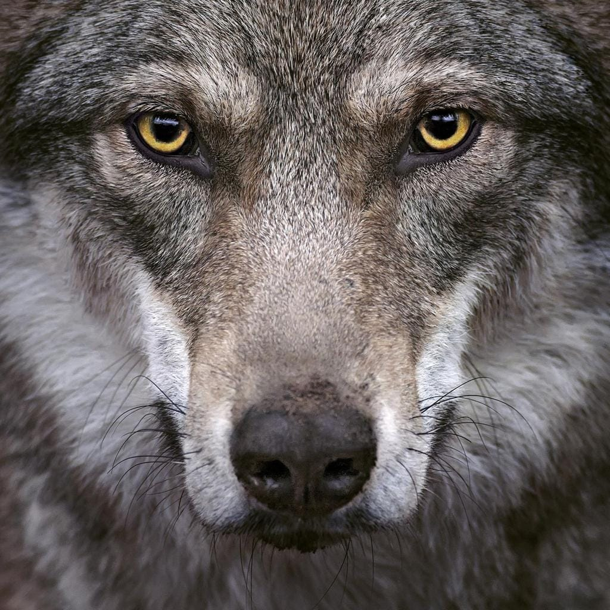
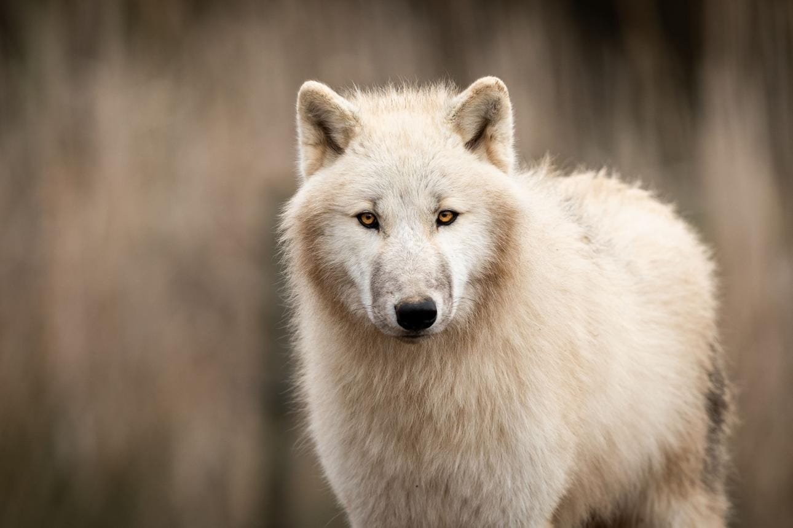
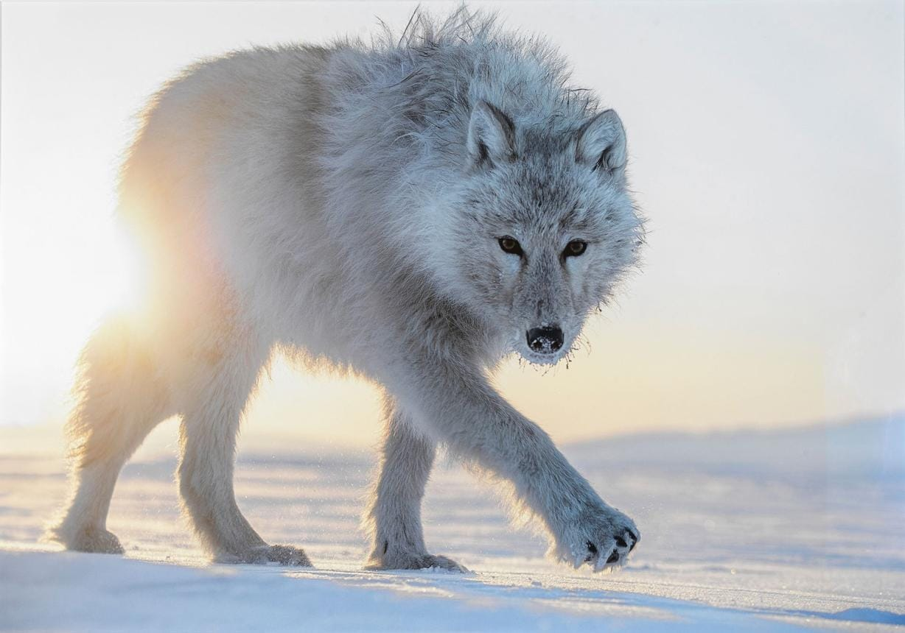
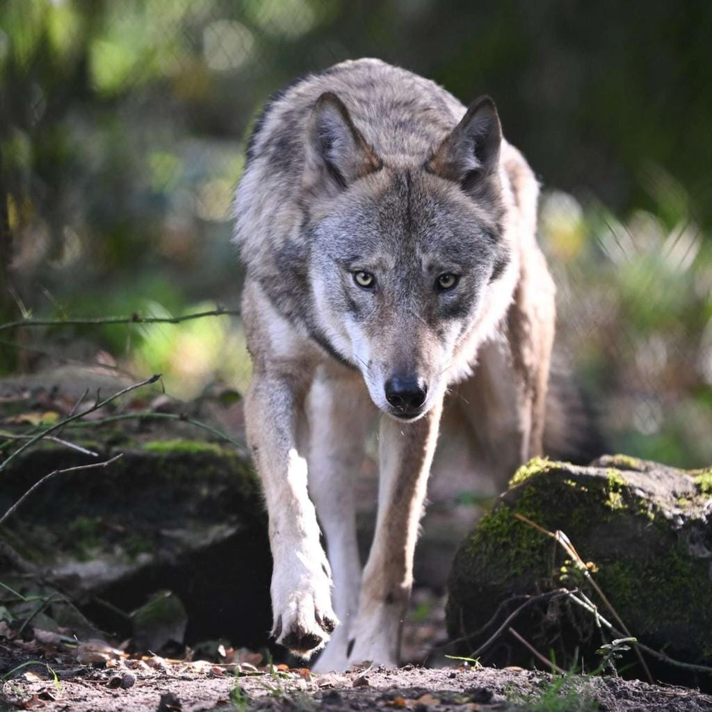
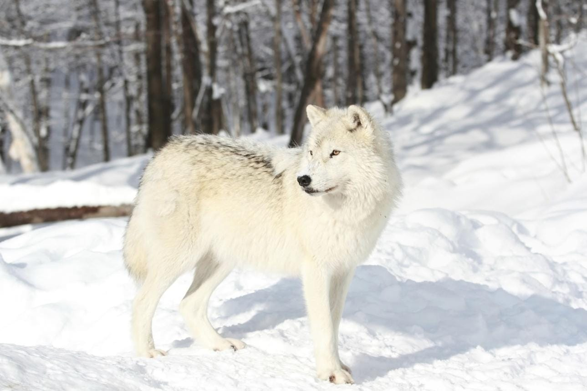
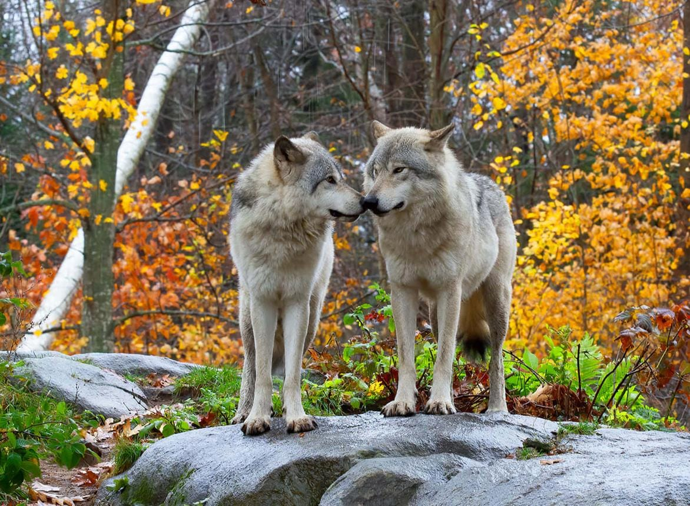

🧠 Inteligente
As lobas aprendem com experiências, observam o que acontece ao seu redor e conseguem se adaptar a diferentes situações. Isso me lembra sua inteligência, sua maneira de pensar e sua capacidade de compreender as coisas.

Escolhi a loba porque vejo nela características que admiro muito em você. Ela representa força, inteligência, persistência e lealdade. E são justamente essas qualidades que fazem você ser tão especial para mim. ♡

As lobas aprendem com experiências, observam o que acontece ao seu redor e conseguem se adaptar a diferentes situações. Isso me lembra sua inteligência, sua maneira de pensar e sua capacidade de compreender as coisas.

Os lobos conseguem enfrentar ambientes desafiadores e mudanças na natureza. Para mim, isso representa sua força e a maneira como você enfrenta momentos difíceis sem deixar de ser quem é.

Os lobos percorrem longas distâncias e continuam procurando maneiras de alcançar seus objetivos. Isso me lembra sua determinação, sua coragem e sua vontade de continuar tentando quando algo importa de verdade para você.

Os lobos se comunicam e cooperam com outros membros do grupo. Isso simboliza o respeito, a consideração e a atenção que admiro em você: sua maneira de ouvir, compreender e tratar as pessoas com carinho.

Os lobos são animais sociais que cooperam com seu grupo e mantêm vínculos importantes. Como símbolo, representam a lealdade, o companheirismo e a vontade de estar ao lado das pessoas que amam.
Porque vejo em você uma combinação muito bonita de força, inteligência, persistência e carinho. Você pode ser forte sem deixar de ser sensível, determinada sem deixar de ter um coração gentil e independente sem deixar de valorizar quem ama.
Se eu tivesse que escolher um animal para representar você, escolheria a loba. Porque ela me lembra a força, a beleza e a personalidade que fazem você ser tão especial para mim. 🤍